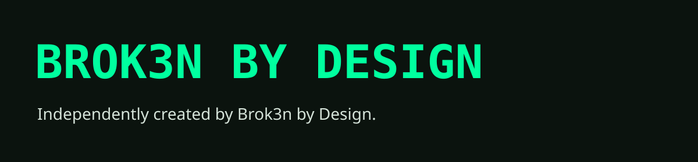
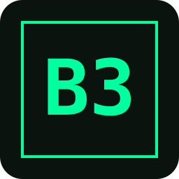

Download wordmark (SVG)FOR WRITERS, STREAMERS & CURIOUS PEOPLE
Press kit
The studio, in its own words. Project artwork, useful links, and a direct line for questions.
About the studio
Brok3n by Design is an independent game studio where each project is designed, directed, and built by a single creator using modern creative tools.
Independently created by Brok3n by Design.
Studio marks
SVG downloads preserve sharp edges at any size. These use the website’s existing B3 and wordmark identity.
{kind=link}

Download B3 mark (SVG){kind=link}
Projects & selected artwork
Check each project page for its latest status before publishing. Concept artwork is identified separately from playable games.

Private alpha · teaser live
Glass & Fortune
A tactile roguelike built around five glass dice, risky combinations, and a masked fortune-teller who never gives you the whole truth.
{kind=link}

In development · teaser live
Bid & Buried
Peek inside a locker, buy it, dig front to back, and choose what earns space in your van.
{kind=link}

Private development · teaser live
Speck
A shared survival sandbox about beginning as almost nothing, shaping the objects around you, and turning an empty patch of world into home.
{kind=link}

Listen live
WRFM Radio
Genuinely good, vocal-free smooth jazz you can leave on all day, hosted by Vera Lang with strange callers and developer-minded commercials.
{kind=link}

Playable beta
Pocket Wilds
A retro fantasy adventure where free-roaming exploration gives way to tactical dice battles when a boss seals the door.
{kind=link}

Prototype · on hold · teaser live
DOQI
The Department of Questionable Inventions: a satirical personality game about ridiculous decisions and their consequences.
{kind=link}

Concept · not developed
Macabre Dolls
A collection of haunting artwork and card-game ideas. A concept archive, with no playable game or teaser.
{kind=link}

In development
The Maze
A narrative dice game about choices, chance, and the consequences you carry through a hostile maze.
{kind=link}

Film experiment
Juicebox
An experimental short film in early development, exploring character, voice, and self-contained stories.
{kind=link}